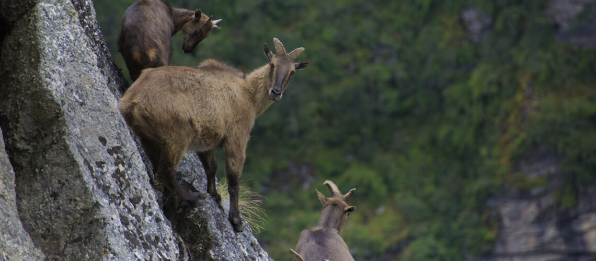
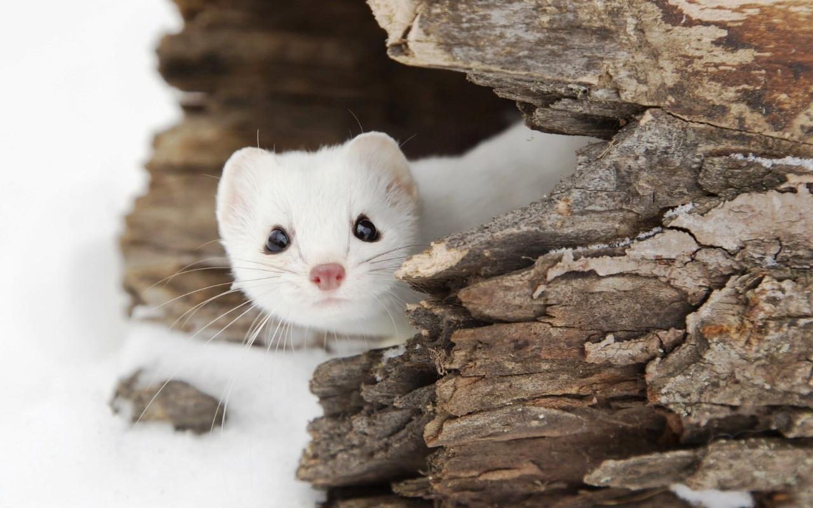
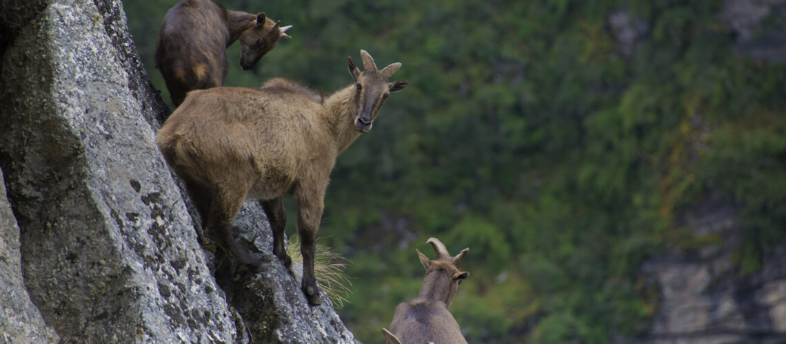
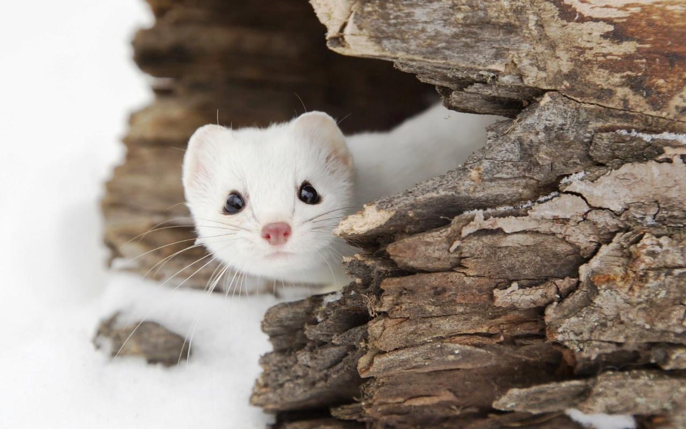

Kedarnath- 202203103510312
SCROLL DOWN TO
VIEW DETAILS
VIEW DETAILS
Kedarnath Wildlife Sanctuary is a protected area located in the Uttarakhand state of India. The sanctuary is named after the famous Kedarnath Temple and is situated at an altitude of 1,160 to 7,000 meters above sea level.